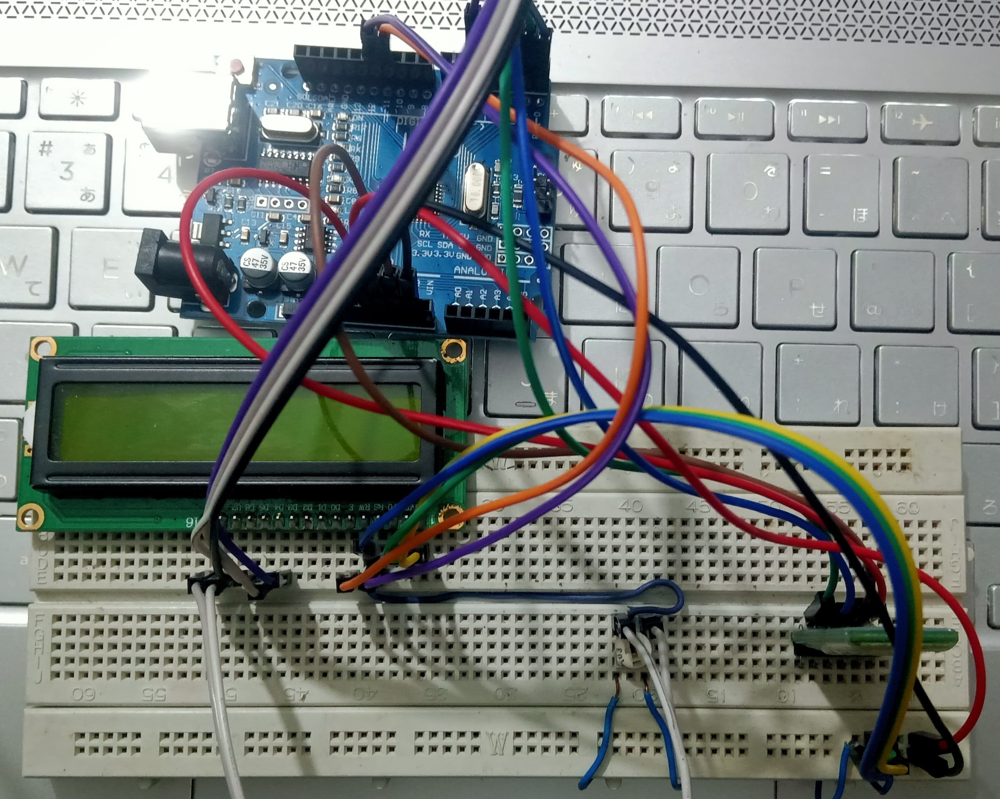
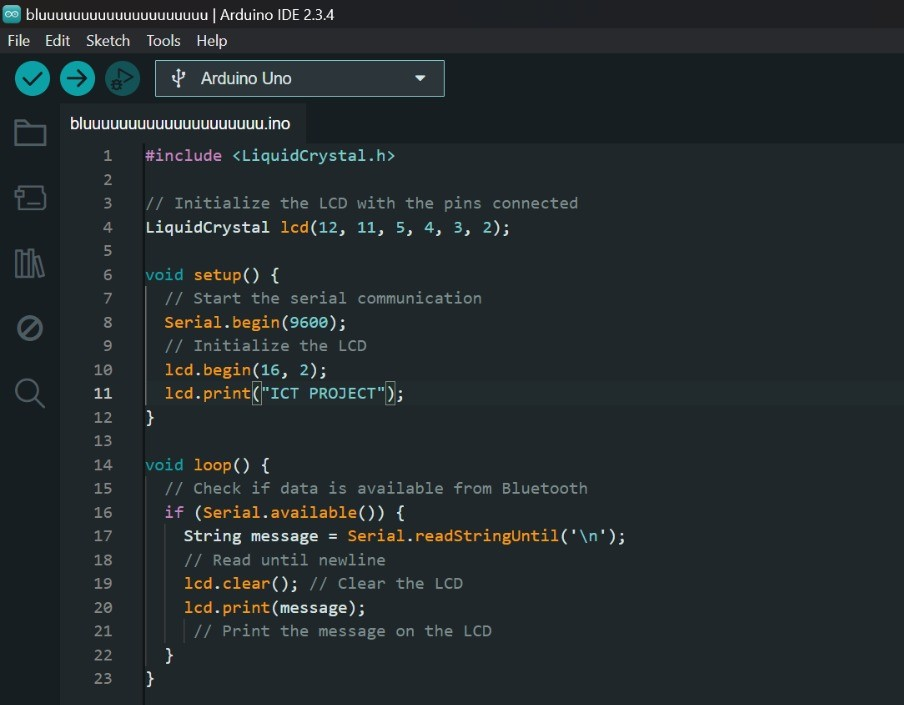
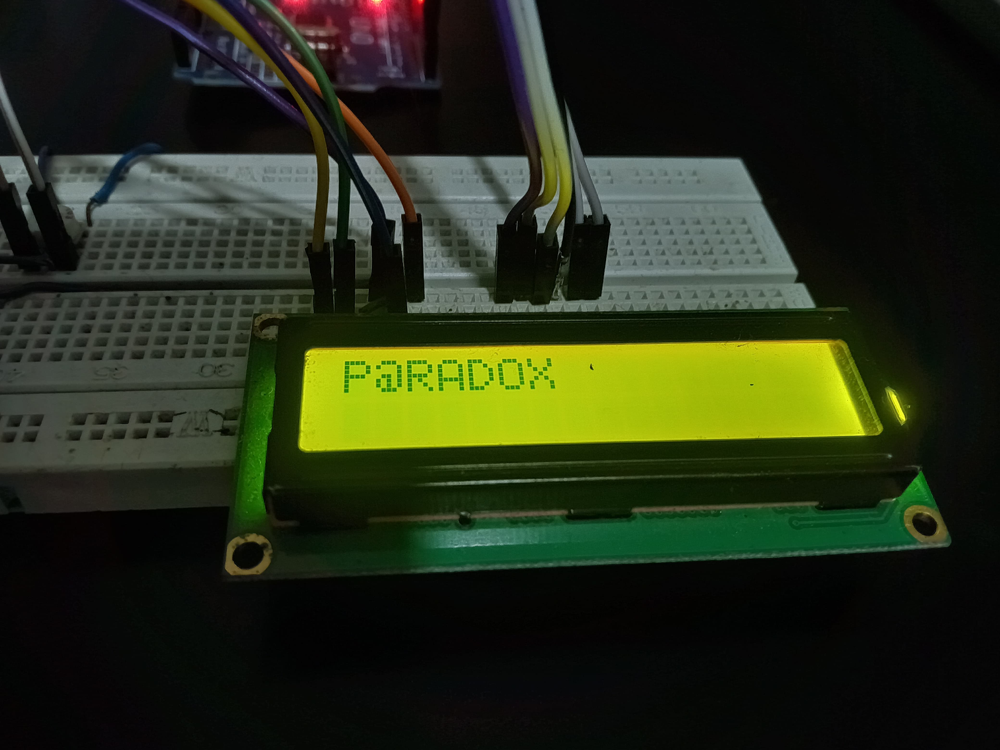
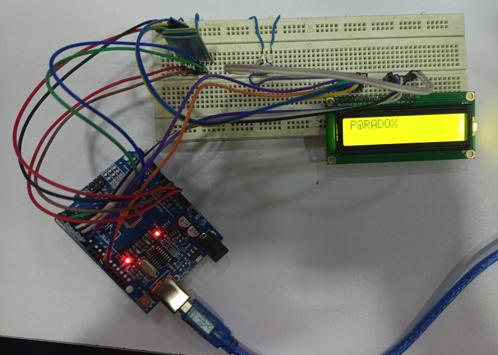

The objective of this project is to create a cost-effective and efficient electronic notice board capable
of displaying messages sent via Bluetooth from a laptop or smartphone.
The connections for the project are as follows:
- HC-05 Bluetooth: RX to Arduino TX, TX to Arduino RX.
- LED Display: Connected to digital pins of Arduino.
- Potentiometer: Adjusts LED display contrast.
We placed all components on the breadboard and ensured proper alignment.
Jumper wires were used to connect the Arduino, Bluetooth module, LED display, and potentiometer as per the circuit diagram.
We wrote a program using the Arduino IDE, incorporating the `LiquidCrystal` library for controlling the LED display. The code was uploaded to the Arduino Uno.
The HC-05 module was paired with a laptop, and messages were sent via a serial monitor to test display functionality.
The electronic notice board successfully displayed messages sent via Bluetooth. The system is user-friendly, portable, and cost-effective.
This project demonstrates how simple components can be used to create a functional and practical solution for real-world problems. Future improvements could include integrating scrolling text and enabling multiple user access.